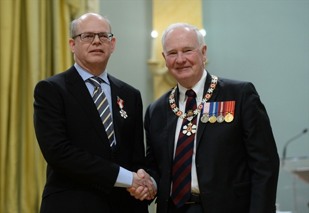

This will take you to the pageBottom
__Webpage Source__
__Click For Page 2__
This will take you to the pageBottom
__Webpage Source__
__Click For Page 2__
Table of Contents
Following are the table of contents
- Breif Summary
- Financials
- Additional Information
BlackBerry Limited: A Canadian Cybersecurity Company
BlackBerry Limited is a Canadian cybersecurity company specializing in enterprise critical event management solutions, endpoint protection, and securing the Internet of things by using artificial intelligence and machine learning against cyberthreats. Originally known as Research In Motion (RIM), it developed the BlackBerry brand of interactive pagers, smartphones, and tablets. It transitioned to a cybersecurity enterprise software and services company under Chief Executive Officer John S. Chen Its products are used by various businesses, car makers, and government agencies to prevent hacking and ransomware attacks. They include BlackBerry Cylance's artificial intelligence based cyber-security solutions, the BlackBerry AtHoc emergency communication system (ECS) platform; the QNX real-time operating system; and BlackBerry Enterprise Server (BlackBerry Unified Endpoint Manager), a Unified Endpoint Management (UEM) platform. BlackBerry was founded in 1984 as Research In Motion by Mike Lazaridis and Douglas Fregin. In 1992, Lazaridis hired Jim Balsillie, and Lazaridis and Balsillie served as co-CEOs until January 22, 2012,[4] when Thorsten Heins became president and CEO. In November 2013, John S. Chen took over as CEO. His initial strategy was to subcontract manufacturing to Foxconn, and to focus on software technology. Currently, his strategy includes forming licensing partnerships with device manufacturers such as TCL Communication and unifying BlackBerry's software portfolio.
Financials
Until 2013, the number of active BlackBerry users increased over time.
For the fiscal period in which the Apple iPhone was first released (in 2007), RIM reported a user base of 10.5 million BlackBerry subscribers.
At the end of 2008, when Google Android first hit the market, RIM reported that the number of BlackBerry subscribers had increased to 21 million.
In the fourth quarter of fiscal year ended March 3 , 2012, RIM shipped 11.1 million BlackBerry smartphones, down 21 percent from the previous quarter and it was the first decline in the quarter covering Christmas since 2006. For its fourth quarter, RIM announced a net loss of US$125 million (the last loss before this occurred in the fourth quarter of the fiscal year 2005). RIM's loss of market share accelerated in 2011, due to the rapidly growing sales of Samsung and HTC Android handsets; RIM's annual market share in the U.S. dropped to just 3 percent, from 9 percent.
In the quarter ended June 28, 2012, RIM announced that the number of BlackBerry subscribers had reached 78 million globally. Furthermore, RIM reported its first quarter revenue for the 2013 fiscal year, showing that the company incurred a GAAP net loss of US$518 million for the quarter, and announced a plan to implement a US$1 billion cost-saving initiative. The company also announced the delay of the new BlackBerry 10 OS until the first quarter of 2013.
After the release of the Apple iPhone 5 in September 2012, RIM CEO Thorsten Heins announced that the number of global users was up to 80 million, which sparked a 7% jump in shares. On December 2, 2012, the company reported a decline in revenue of 5% from the previous quarter and 47% from the same period the previous year. The company reported a GAAP profit of US$14 million (adjusted net loss of US$115 million), which was an improvement over previous quarters. The company also grew its cash reserves to US$2.9 billion, a total that was eventually increased to nearly US$600 million in the quarter. The global subscriber base of BlackBerry users declined slightly for the first time to 79 million, after peaking at an all-time high of 80 million the previous quarter.
In September 2013, the company announced that its growing BBM instant messaging service will be available for Android and iPhone devices. BlackBerry stated that the service has 60 million monthly active customers who send and receive more than 10 billion messages a day. The "BBM Channels" enhancement is expected in late 2013, whereby conversations are facilitated between users and communities, based on factors such as common interests, brands, and celebrities.
On September 28, 2013, media reports confirmed that BlackBerry lost US$1.049 billion during the second fiscal quarter of 2013. In the wake of the loss, Heins stated: "We are very disappointed with our operational and financial results this quarter and have announced a series of major changes to address the competitive hardware environment and our cost structure."
Between 2010 and 2013, the stock price of the company dropped by 87 percent due to the widespread popularity of the iPhone. Goldman Sachs estimated that, in June 2014, BlackBerry accounted for 1 percent share of smartphone sales, compared to a peak of around 20 percent in 2009.
With the release of its financial results for the first fiscal quarter of 2015 in June 2014, Chen presented a more stable company that had incurred a lower amount of loss than previous quarters. The New York Times described "a smaller-than-expected quarterly loss", based on the June 19, 2014 news release:
Revenue for the first quarter of fiscal 2015 was $966 million, down $10 million or 1% from $976 million in the previous quarter ... During the first quarter, the Company recognized hardware revenue on approximately 1.6 million BlackBerry smartphones compared to approximately 1.3 million BlackBerry smartphones in the previous quarter.
Ian Austin of the New York Times provided further clarity on BlackBerry's news release: "Accounting adjustments enabled BlackBerry to report a $23 million, or 4 cents a share, profit for its last quarter. Without those noncash charges, however, the company lost $60 million, or 11 cents a share, during the period." Following the news release, Chen stated that BlackBerry is comfortable with its position, and it is understood that his plan for the company mainly involves businesses and governments, rather than consumers.
Takeaways
- In 2007 RIM reported a user base of 10.5 million BlackBerry subscribers.
- In the fourth quarter of fiscal year ended March 3 , 2012, RIM shipped 11.1 million BlackBerry smartphones, down 21 percent from the previous quarter
- Between 2010 and 2013, the stock price of the company dropped by 87 percent due to the widespread popularity of the iPhone
Additional Information
1984–2001: Early years and growth
Logo as Research In Motion, used prior to January 30, 2013
Research In Motion Limited was founded in March 1984 by Mike Lazaridis and Douglas Fregin.[5] At the time, Lazaridis was an engineering student at the University of Waterloo while Fregin was an engineering student at the University of Windsor.[6] In 1988, RIM became the first wireless data technology developer in North America and the first company outside Scandinavia to develop connectivity products for Mobitex wireless packet-switched data communications networks. In 1990, RIM introduced the DigiSync Film KeyKode Reader. In 1991, RIM introduced the first Mobitex protocol converter. In 1992, RIM introduced the first Mobitex point-of-sale solution, a protocol converter box that interfaced with existing point-of-sale terminal equipment to enable wireless communication. In 1993, RIM introduced the RIMGate, the first general-purpose Mobitex X.25 gateway. In the same year, RIM launched Ericsson Mobidem AT and Intel wireless modem containing RIM modem firmware. In 1994, RIM introduced the first Mobitex mobile point-of-sale terminal. In the same year, RIM received the Emmy Award for Technical Innovation and the KPMG High Technology Award. In 1995, RIM introduced Freedom, the first Type II PCMCIA radio modem for Mobitex.
In 1995, RIM was financed by Canadian institutional and venture capital investors through a private placement in the privately held company. Working Ventures Canadian Fund Inc. led the first venture round[7] with a C$5,000,000 investment with the proceeds being used to complete the development of RIM's two-way paging system hardware and software. A total of C$30,000,000 in pre-IPO financing was raised by the company prior to its initial public offering on the Toronto Stock Exchange in January 1998 under the symbol RIM.[8]
In 1996, RIM introduced the Interactive Pager, the first two-way messaging pager, and the RIM 900 OEM radio modem. The company worked with RAM Mobile Data and Ericsson to turn the Ericsson-developed Mobitex wireless data network into a two-way paging and wireless e-mail network. Pivotal in this development was the release of the Inter@ctive Pager 950, which started shipping in August 1998. About the size of a bar of soap, this device competed against the Skytel two-way paging network developed by Motorola.
In 1999, RIM introduced the BlackBerry 850 pager. Named in reference to the resemblance of its keyboard's keys to the druplets of the blackberry fruit, the device could receive push email from a Microsoft Exchange Server using its complementary server software, BlackBerry Enterprise Server (BES). The introduction of the BlackBerry set the stage for future enterprise-oriented products from the company, such as the BlackBerry 957 in April 2000, the first BlackBerry smartphone. The BlackBerry OS platform and BES continued to increase in functionality—while the incorporation of encryption and S/MIME support helped BlackBerry devices gain increased usage by governments and businesses.[9][10] During fiscal 1999-2001, total assets declared in the RIM's balance sheet grew eight-fold due to massive capacity expansion.
2001–2011: Global expansion and competition
RIM soon began to introduce BlackBerry devices aimed towards the consumer market as well, beginning with the BlackBerry Pearl 8100—the first BlackBerry phone to include multimedia features such as a camera. The introduction of the Pearl series was highly successful, as was the subsequent Curve 8300 series and Bold 9000. Extensive carrier partnerships fuelled the rapid expansion of BlackBerry users globally in both enterprise and consumer markets.
Despite the arrival of the first Apple iPhone in 2007, BlackBerry sustained unprecedented market share growth well into 2011. The introduction of Apple's iPhone on the AT&T network in the fall of 2007 in the United States prompted RIM to produce its first touchscreen smartphone for the competing network in 2008—the BlackBerry Storm. The Storm sold well but suffered from mixed to poor reviews and poor customer satisfaction.[10][11] The iPhone initially lagged behind the BlackBerry in both shipments and active users, due to RIM's head start and larger carrier distribution network. In the United States, the BlackBerry user base peaked at approximately 21 million users in the fall of 2010.[12][13][14] That quarter, the company's global subscriber base stood at 36 million users.[15] As the iPhone and Google Android accelerated growth in the United States, the BlackBerry began to turn to other smartphone platforms. Nonetheless, the BlackBerry line as a whole continued to enjoy success, spurred on by strong international growth. As of December 1, 2012, the company had 79 million BlackBerry users globally[16] with only 9 million remaining in the United States.[17]
Even as the company continued to grow worldwide, investors and media became increasingly alarmed about the company's ability to compete with devices from rival mobile operating systems iOS and Android. Analysts were also worried about the strategic direction of the co-CEOs' management structure. In June 2014, CNN released an article citing BlackBerry as one of six endangered US-Canadian brands.[18]
Following numerous attempts to upgrade their existing Java platform, the company made numerous acquisitions to help it create a new, more powerful BlackBerry platform, centered around its recently acquired real-time operating system QNX.[19] In March 2011, Research In Motion Ltd.'s then-co-CEO Jim Balsillie suggested during a conference call that the "launch of some powerful new BlackBerrys" (eventually released as BlackBerry 10) would be in early 2012. However analysts were "worried that promoting the mysterious, supposedly game-changing devices too early might hurt sales of existing BlackBerrys" (similar to the Osborne effect). The initial launch date was seen in retrospect as too ambitious, and hurt the company's credibility at a time when its existing aging products steadily lost market share.[20]
On September 27, 2010, RIM announced the long-rumoured BlackBerry PlayBook tablet, the first product running on the new QNX platform known as BlackBerry Tablet OS. The BlackBerry PlayBook was officially released to U.S. and Canadian consumers on April 19, 2011. The PlayBook was criticized for being rushed to market in an incomplete state and sold poorly. Following the shipments of 900,000 tablets during its first three quarters on market, slow sales and inventory pileups prompted the company to reduce prices and to write down the inventory value by $485 million.[21]
Primary competitio
The primary competitors of the BlackBerry are smartphones running Android and the Apple iPhone. For a number of years, the BlackBerry was the leading smartphone in many markets, particularly the United States. The arrival of the Apple iPhone and later Google's Android platform caused a slowdown in BlackBerry growth and a decline in sales in some markets, most notably the United States. This led to negative media and analyst sentiment over the company's ability to continue as an independent company.[22]
When Apple's iPhone was first introduced in 2007, it generated substantial media attention, with numerous media outlets calling it a "BlackBerry killer".[23][24] While BlackBerry sales continued to grow, the newer iPhone grew at a faster rate and the 87 percent drop in BlackBerry's stock price between 2010 and 2013 is primarily attributed to the performance of the iPhone handset.[25]
The first three models of the iPhone (introduced in 2007) generally lagged behind the BlackBerry in sales, as RIM had major advantages in carrier and enterprise support; however, Apple continued gaining market share. In October 2008, Apple briefly passed RIM in quarterly sales when they announced they had sold 6.9 million iPhones to the 6.1 million sold by RIM, comparing partially overlapping quarters between the companies.[26] Though Apple's iPhone sales declined to 4.3 million in the subsequent quarter[27] and RIM's increased to 7.8 million, for some investors this indicated a sign of weakness.[28] Apple's iPhone began to sell more phones quarterly than the BlackBerry in 2010, brought on by the release of the iPhone 4.[29][30]
In the United States, the BlackBerry hit its peak in September 2010, when almost 22 million users, or 37% of the 58.7 million American smartphone users at the time, were using a BlackBerry.[31] BlackBerry then began to decline in use in the United States, with Apple's installed base in the United States finally passing BlackBerry in April 2011.[32] Sales of the iPhone continued to accelerate, as did the smartphone market, while the BlackBerry began to lose users continuously in the United States. By February 2016, only 1.59 million (0.8%) of the 198.9 million smartphone users in the United States were running BlackBerry compared to 87.32 million (43.9%) on an iPhone.[33]
Google's Android mobile operating system, running on hardware by a range of manufacturers including Sony, Motorola, HTC, Samsung, LG and many others ramped up the competition for BlackBerry. In January 2010, barely 3 million (7.1%) of the 42.7 million Smartphones in use at the time in the United States were running Android, compared to 18 million BlackBerry devices (43%).[34] Within a single year Android had passed the installed base of the BlackBerry in the United States.[35] By February 2016, only 1.59 million (0.8%) of the 198.9 million smartphone users in the United States were running BlackBerry compared to 104.82 million (52.7%) running Android.[33]
While RIM's secure encrypted network was attractive to corporate customers, their handsets were sometimes considered less attractive to consumers than iPhone and Android smartphones. Developers often developed consumer applications for those platforms and not the BlackBerry.[36][37] During 2010s, even enterprise customers had begun to adopt BYOD policies due to employee feedback. The company also faced criticism that its hardware and operating system were outdated and unappealing compared to the competition, as well as that the browsing capabilities were poorer.[38]
2011–2015: Strategic changes and restructuring
Slowing growth prompted the company to undertake a lay-off of 2,000 employees in the summer of 2011.[39] In September 2011, the company's BlackBerry Internet Service suffered a massive outage, impacting millions of customers for several days. The outage embarrassingly occurred as Apple prepared to launch the iPhone 4S, causing fears of mass defections from the platform.[40]
Shortly afterwards, in October 2011, RIM unveiled BBX, a new platform for future BlackBerry smartphones that would be based on the same QNX-based platform as the PlayBook. However, due to an accusation of trademark infringement regarding the name BBX, the platform was renamed BlackBerry 10.[41][42] The task proved to be daunting, with the company delaying the launch in December 2011 to some time in 2012.[43] On January 22, 2012, Mike Lazaridis and Jim Balsillie resigned as the CEOs of the company, handing the reins over to executive Thorsten Heins.[4] On March 29, 2012, the company reported its first net loss in years.[44] Heins set about the task of restructuring the company, including announcing plans to lay off 5,000 employees, replacing numerous executives, and delaying the new QNX-based operating system for phones ("BlackBerry 10") a second time into January 2013.[45]
BlackBerry 10
Main article: BlackBerry 10
After much criticism and numerous delays, RIM officially launched BlackBerry 10 and two new smartphones based on the platform, the BlackBerry Z10 and Q10, on January 30, 2013.[10][46][47] The BlackBerry Z10, the first BlackBerry smartphone running BlackBerry 10, debuted worldwide in January 2013, going on sale immediately in the U.K. with other countries following. A marked departure from previous BlackBerry phones, the Z10 featured a fully touch-based design, a dual-core processor, and a high-definition display. BlackBerry 10 had 70,000 applications available at launch, which the company expected would rise to 100,000 by the time the device made its debut in the United States. In support of the launch, the company aired its first Super Bowl television advertisement in the U.S. and Canada during Super Bowl XLVII.[48] In discussing the decision to create a proprietary operating system instead of adopting an off-the-shelf platform such as Android, Heins noted, "If you look at other suppliers' ability to differentiate, there's very little wiggle room. We looked at it seriously—but if you understand what the promise of BlackBerry is to its user base it's all about getting stuff done. Games, media, we have to be good at it but we have to support those guys who are ahead of the game. Very little time to consume and enjoy content—if you stay true to that purpose you have to build on that basis. And if we want to serve that segment we can't do it on a me-too approach."[49] Chief Operating Officer Kristian Tear remarked "We want to regain our position as the number one in the world", while Chief Marketing Officer Frank Boulben proclaimed "It could be the greatest comeback in tech history. The carriers are behind us. They don't want a duopoly" (referring to Apple and Samsung).[38]
During the BlackBerry 10 launch event, the company also announced that it would change its public brand from Research In Motion to BlackBerry.[50][46] The name change was made to "put the BlackBerry brand at the centre" of the company's diverse brands, and because customers in some markets "already know the company as BlackBerry".[10] While a shareholder vote on an official name change to BlackBerry Limited will be held at its next annual general meeting, its ticker symbols on the TSX and NASDAQ changed to BB and BBRY respectively on February 4, 2013.[51][52]
On August 12, 2013, the company announced that it was open to being purchased and stated in an official news release to Canada's securities administrators:
The company’s board of directors has formed a special committee to explore strategic alternatives to enhance value and increase scale in order to accelerate BlackBerry 10 deployment. These alternatives could include, among others, possible joint ventures, strategic partnerships or alliances, a sale of the Company or other possible transactions.[53]
Prem-Watsa/Fairfax Deal
Canada Pension Plan Investment Board's CEO Mark Wiseman stated that he would consider investing in BlackBerry if the company became private.[54] Also on August 12, 2013, foremost shareholder Prem Watsa resigned from BlackBerry's board.[55]
On September 20, 2013, the company announced it would lay off 4,500 staff and take a CAD$1 billion operating loss.[56] Three days later, the company announced that it had signed a letter of intent to be acquired by a consortium led by Prem Watsa-owned Fairfax Financial Holdings for a $9 per share deal. This deal was also confirmed by Watsa.[57]
On September 29, 2013, the company began operating a direct sales model for customers in the United States, where unlocked Q10 and Z10 smartphones were sold directly from the BlackBerry website.[58] On October 15, 2013, the company published an open letter in 30 publications in nine countries to reassure customers that BlackBerry would continue to operate.[59] Anthony Michael Sabino, St. John's University business professor, stated in the Washington Post: "This is BlackBerry’s last-ditch attempt to simply survive in the face of crushing competition in a market it essentially invented."[60]
John Chen joins BlackBerry
See also: John S. Chen
On November 4, 2013, the Fairfax Prem Watsa deal was scrapped in favor of a US$1 billion cash injection which, according to one analyst, represented the level of confidence BlackBerry's largest shareholder had in the company.[61] At the same time, BlackBerry installed John Chen as CEO to replace the laid-off Heins.[62] According to the Globe and Mail, BlackBerry's hope was that Chen, with his reputation as a turnaround artist, could save the company.
"John Chen knows how to manage a mobile company, and perhaps most importantly, can make things happen in the industry," J. Gold Associates Principal Analyst Jack Gold told the publication.[63]
"We have begun moving the company to embrace a multi-platform, BYOD world by adopting a new mobility management platform and a new device strategy," Chen explained in an open letter published shortly after his appointment. "I believe in the value of this brand. With the right team and the right strategy in place, I am confident that we will rebuild BlackBerry for the benefit of all our constituencies."[64]
In April 2014, Chen spoke of his turnaround strategy in an interview with Reuters,[65] explaining that he intended to invest in or partner with other companies in regulated industries such as healthcare, financial, and legal services. He later clarified that BlackBerry's device division remained part of his strategy and that his company was also looking to invest in "emerging solutions such as machine to machine technologies that will help power the backbone of the Internet of Things."[66] He would later expand on this idea at a BlackBerry Security Summit in July 2014.[67]
In May 2014, the low-cost BlackBerry Z3 was introduced onto the Indonesian market, where the brand had been particularly popular. The budget handset was produced in partnership with Taiwanese manufacturer Foxconn Technology Group, which handled the design and distribution of the product. A New York Times analysis stated that the model was an attempt by Chen to generate revenue while he tried "to shift the organization’s focus to services and software." An analyst with London's ABI Research said: "John Chen is just sustaining the handset business as he sorts out the way ahead." As part of the localization effort for the promotion of the Z3, the handset's back panel was engraved with the word "Jakarta", but skepticism still emerged, as the handset was still more than twice as expensive as Android models in Indonesia at the time of release.[68]
2015–present: Software transition
In the first quarter of the 2015 fiscal year, Chen stated: "This is, of course, the very beginning of our task and we hope that we will be able to report better results going forward ... We feel pretty good about where we are." Quartz reported that stock was up by 30 percent, compared to the same period in the previous year,[25] while Chen expressed enthusiasm for the release of two new handsets, both with keyboards and touch screens, in the second half of 2014. Chen did not provide sales figures for the Z3 phone in Indonesia.[69]
In September 2015, Chen unveiled the BlackBerry Priv, a keyboard-slider smartphone utilizing the Android operating system with BlackBerry-developed software enhancements, including a secure bootloader, full-disk encryption, integrity protection, and the BlackBerry HUB.[70]
As of June 2021, Cybersecurity ($107 million) and IoT ($43 million) revenue accounted for a combined 86% of Q1 2022 earnings ($174 million). Chen reiterated: "Now, we are pivoting the organization more heavily toward the market by creating two business units, Cybersecurity and IoT ... we will provide revenue and gross margin by business unit as well as other selected metrics. We believe that this additional color will help investor gain better understanding of the underlying performance of the business units, ultimately driving shareholder value."[71]
Strategic acquisitions
During this time, BlackBerry also expanded its software and services offerings with several key acquisitions. These included file security firm WatchDox,[72] crisis communications leader AtHoc,[73] and rival EMM vendor Good Technology.[74] The products offered by these firms were gradually re-branded and integrated into BlackBerry's own portfolio.
Trefis, an analyst team and Forbes contributor, called Good "a nice strategic fit for BlackBerry's software business", noting that the acquisition would "help improve BlackBerry's cross-platform EMM support and bring in a relatively large and diverse customer base, while also helping drive incremental revenue growth". It also noted that the acquisition – the largest in BlackBerry's history – indicated the company's commitment to a software-focused turnaround plan. It remained ambivalent about the company's outlook overall.[75]
In January 2016, Chen stated that BlackBerry did not plan on developing any new devices running BlackBerry 10 and that the company would release two new Android devices at most during 2016.[76] BlackBerry also announced the release of the Good Secure EMM Suites, consolidating WatchDox and Good Technology's products into several tiered offerings alongside its existing software.[77]
Hardware licensing partnerships
BlackBerry announced the DTEK50, a mid-range Android smartphone, on July 26, 2016.[78] Unlike the Priv, the DTEK50 was a re-branded version of an existing smartphone, the Alcatel Idol 4 as manufactured by TCL Corporation, one of the company's hardware partners.[79] It was to be the second-last phone ever developed in-house at BlackBerry, followed by the DTEK60 in October 2016 - on September 28, 2016, BlackBerry announced that it would cease in-house hardware development to focus on software, delegating development, design, and manufacturing of its devices to third-party partners.[80]
The first of these partners was BB Merah Putih, a joint venture in Indonesia. Chen stated that the company was "no longer just about the smartphone, but the smart in the phone".[81][82] On December 15, 2016, BlackBerry announced that it had reached a long-term deal with TCL to continue producing BlackBerry-branded smartphones for sale outside of Bangladesh, India, Indonesia, Nepal, and Sri Lanka.[83] This partnership was followed by an agreement with Optiemus Infracom on February 6, 2017 to produce devices throughout India and neighbouring markets including Sri Lanka, Nepal, and Bangladesh.[84]
Since the partnerships were announced, TCL has released the BlackBerry KeyONE[85] and BB Merah Putih has released the BlackBerry Aurora.[86]
Cybersecurity consulting
In February 2016, BlackBerry acquired UK-based cybersecurity firm Encription,[87] with the intention of branching out into the security consulting business. It later released BlackBerry SHIELD, an IT risk assessment program for its corporate clients.[88] In April 2017, BlackBerry's cybersecurity division partnered with Allied World Assurance Company Holdings, a global insurance and reinsurance provider.[89] This agreement saw BlackBerry's SHIELD self-assessment tool integrated into Allied World's FrameWRX cyber risk management solution.
BlackBerry Secure
On December 8, 2016, BlackBerry announced the release of BlackBerry Secure. Billed as a "comprehensive mobile security platform for the Enterprise of Things",[90] BlackBerry Secure further deepens the integration between BlackBerry's acquisitions and its core portfolio. According to Forbes, it brings all of BlackBerry's products "under a single umbrella".[90]
On February 7, 2017, BlackBerry announced the creation of the BBM Enterprise SDK, a Communication-Platform-as-a-Service development tool.[91] The Enterprise SDK allows developers to incorporate BBM Enterprise's messaging functionality into their applications. It was released to BlackBerry's partners on February 21, 2017, and officially launched on June 12, 2017.[92]
Also in February 2017, analyst firm 451 Research released a report on BlackBerry's improved financial position and product focus.[93] The report identified BlackBerry's position in the Internet of Things and its device licensing strategy as strengths. The BBM Enterprise SDK was also highlighted, alongside several challenges still facing the company.

This is the pageBottom Anchor